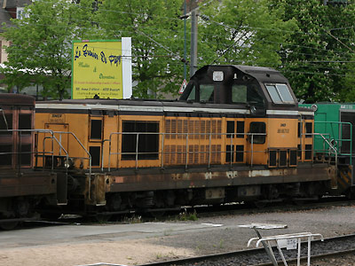
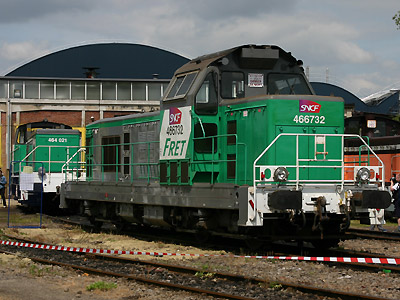

Ferrovia - 19 Septembre 2012
BB 66700
Locomotives Diesel-électriques de moyenne puissance monocabine adaptées à la manoeuvre. Les BB 66700 sont des machines transformées à partir de BB 66000 pour la pousse à la butte. Elles se distinguent par des vitres supplémentaires afin d'améliorer la visibilité en manoeuvre et une livrée orange proche de celle des BB 63500 pour les 24 premières locomotives transformées entre 1985 et 1991.
Une seconde série de dix machines sont transformées en 2003. Elles portent la livrée Fret.
Quelques données techniques
Constructeur : Alstom
Aptitude à l'UM
Moteur MGO à 16 cylindres
Pour plus d'info :
La fiche BB 66700 sur Wikipedia
Fiche technique des BB 66700 de Florent Brisou
L'inventaire des BB 66700 sur Trains du Sud-Ouest

La BB 66702 à Mulhouse (01/05/2006)

La BB 66732 à Lens (11/06/2005)